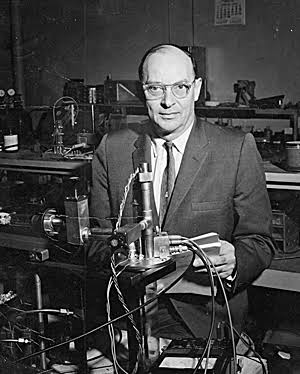
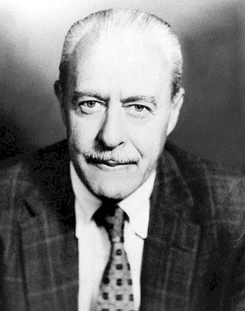
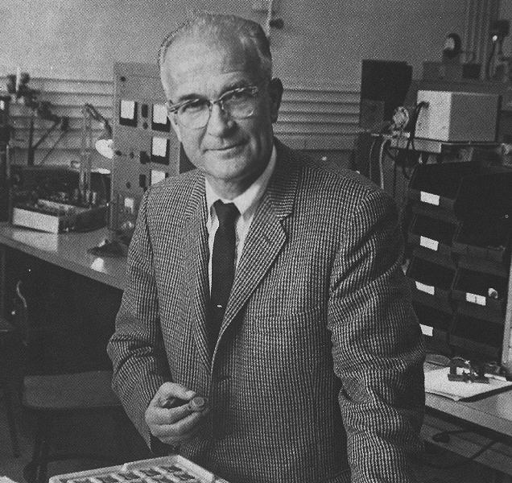
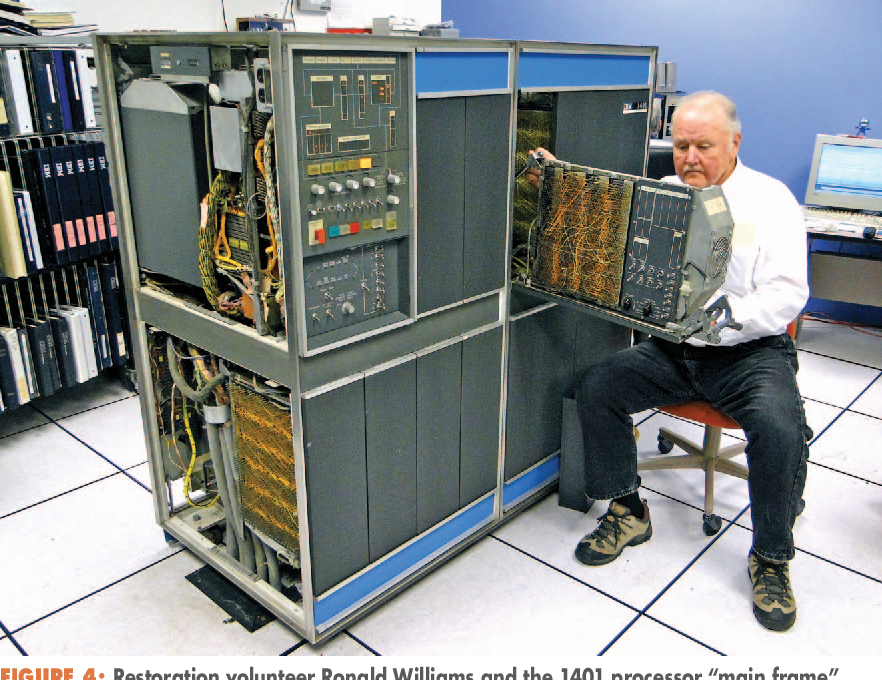

Головна
Головна
Головна
Головна
Друге покоління комп’ютерів (приблизно 1956–1963 роки) стало важливим етапом еволюції обчислювальної техніки. Головною технологічною зміною став перехід від вакуумних ламп до транзисторів.
Це дозволило значно зменшити розміри комп’ютерів, підвищити їхню надійність і знизити енергоспоживання. Комп’ютери почали ставати більш практичними для реального використання в науці, бізнесі та промисловості.
Після винайдення транзистора у 1947 році почався новий етап розвитку електроніки. До середини 1950-х років транзистори поступово замінили вакуумні лампи у комп’ютерах.
Це дало можливість створювати компактніші, швидші та значно стабільніші системи. Комп’ютери почали використовуватись не лише у військових і наукових установах, а й у комерційних організаціях.
Основою другого покоління стали транзистори — напівпровідникові елементи, які виконували функції перемикання та підсилення сигналів.

На відміну від вакуумних ламп, транзистори були: менші, швидші, надійніші та споживали значно менше енергії.
Це дозволило зменшити розміри комп’ютерів і підвищити їх продуктивність.

Один із винахідників транзистора.

Співвинахідник транзистора, що замінив вакуумні лампи.

Розвинув технологію транзисторів і напівпровідників.
Один із найпопулярніших комерційних комп’ютерів свого часу. Використовувався в бізнесі для обробки даних, бухгалтерії та управління інформацією.
Завдяки транзисторам був значно швидший і надійніший за попередні покоління.

Потужний науковий комп’ютер, який використовувався для складних розрахунків у космічній та військовій галузі.
Один із перших транзисторних комп’ютерів великого масштабу.

У другому поколінні почали з’являтися перші мови програмування високого рівня. Це значно спростило процес створення програм.
Найважливішою зміною стало використання мов FORTRAN і COBOL, які дозволяли писати більш зрозумілі інструкції замість машинного коду.
Також з’явилися перші компілятори, які переводили код у машинні інструкції.